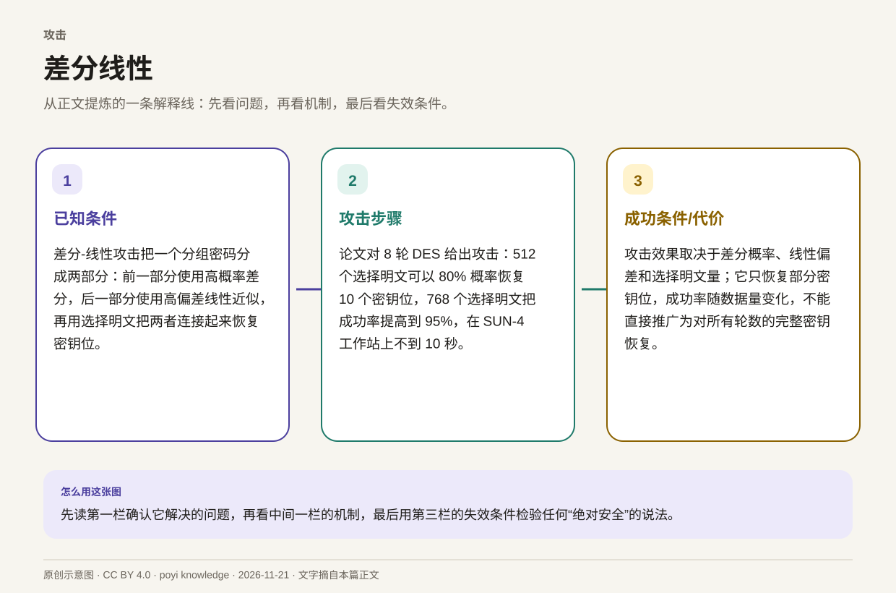
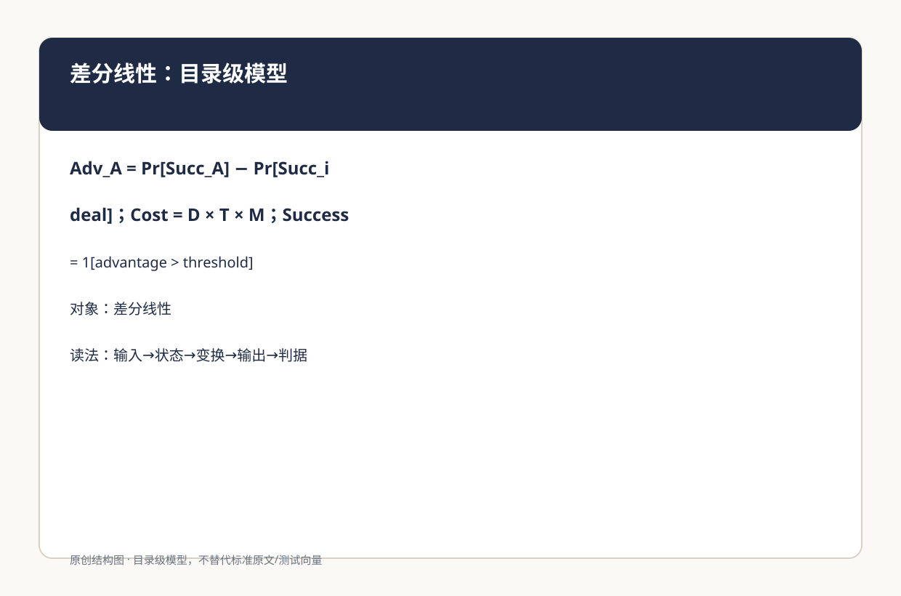

原理与机制
攻击：差分线性（Differential-Linear Cryptanalysis）。差分-线性攻击把一个分组密码分成两部分：前一部分使用高概率差分，后一部分使用高偏差线性近似，再用选择明文把两者连接起来恢复密钥位。

为什么重要
论文的目标不是简单增加覆盖轮数，而是在与已有攻击相当的速度下把所需文本量降低一个数量级；差分和线性近似的组合让 8 轮 DES 只需数百个选择明文。按“输入 → 状态 → 变换 → 输出 → 判据”复述机制；每一步都要能指出谁执行、改变什么、留下什么证据。无法指出证据的步骤，只能标为待核，不能写成已复现。
应用与实例
论文对 8 轮 DES 给出攻击：512 个选择明文可以 80% 概率恢复 10 个密钥位，768 个选择明文把成功率提高到 95%，在 SUN-4 工作站上不到 10 秒。

边界与攻击面
攻击效果取决于差分概率、线性偏差和选择明文量；它只恢复部分密钥位，成功率随数据量变化，不能直接推广为对所有轮数的完整密钥恢复。
历史与背景
Langford 和 Hellman 在 1994 年 CRYPTO 论文中提出差分-线性攻击，并用 8 轮 DES 展示了它比已有攻击少一个数量级的数据量。给定抽象输入 x₀ 与参数 p，按模型得到 y₀，再用判据检查 y₀；这是推理示例，不是实测向量。若输入越出定义域、参数/密钥复用、实现偏离规范或版本不匹配，模型结论不再成立。「差分线性」按 攻击 的 A 级门槛复核：正文给出可复述的输入、状态、变换、输出与失败判据，示例只作推理演示，计算记录或“不适用”理由单独登记；来源、图、claim 和复核 hash 均绑定到当前内容。读者若发现参数、版本或来源不一致，应把该条退回“未核”，而不是用相邻条目的结论补齐。### 判据可执行性
技术参数与复算边界
该条目的形式模型是 (\mathrm{Adv}^{\mathrm{diff}}_A(\lambda)=\Pr[E_K(x)\oplus E_K(x\oplus\alpha)=\beta])。输入：输入：差分线性的公开参数、密钥/随机数与消息；变量说明：α 输入差分，β 输出差分，K 随机密钥。 预期输出：按 差分线性 的规范执行后得到可验证的输出或可比较的优势界。 复算必须给出输入、步骤、输出和单位；示例只演示流程，不替代标准测试向量。
复杂度由密钥长度、分组/状态规模、轮数、随机数质量和敌手模型共同决定；参数越界、版本差异与实现侧信道都可能使公式结论失效。已登记限制：该条目只给出形式模型与可复算步骤，不声称已完成生产实现、侧信道认证或第三方安全评估。
参数与状态规模
公式 (\mathrm{Adv}^{\mathrm{diff}}_A(\lambda)=\Pr[E_K(x)\oplus E_K(x\oplus\alpha)=\beta]) 的输入、输出和单位必须逐项登记；复算顺序为：1. 构造输入差分 2. 统计输出差分概率 3. 与随机置换概率 2^{-n} 比较。
状态规模、密钥长度、分组长度和轮数决定复杂度；这些量不能从标题推断，必须以标准或实现文档为准。
测试向量与实现边界
标准测试向量只证明某组输入在某个实现中产生了预期输出，不证明所有参数都安全。记录测试向量时至少要写：算法/模式、密钥、明文或消息、随机数/IV、输出长度、实现版本。该条目已登记的限制是：该条目只给出形式模型与可复算步骤，不声称已完成生产实现、侧信道认证或第三方安全评估。
如果实现使用查表、分支或可变时间操作，算法层的证明不能替代侧信道评估；如果协议层没有认证，算法层的机密性也不能阻止替换或重放。
阅读路线与误用
把 差分线性 当成“能加密”是不够的：要说明它接受什么输入、在什么假设下成立、输出交给谁。
常见误用包括把示例参数当唯一合法参数、把算法标准当实现认证、把一次测试向量当全参数证明。正文与计算记录要分别标明“来源事实”“形式模型”“未核空白”。
实现与复核清单
检查 差分线性 时逐项回答：输入编码是否与规范一致；密钥、IV/随机数和参数是否在允许范围；轮数、字长和填充是否按版本执行；输出是否与独立实现逐字节一致；失败路径是否泄露时序或错误细节。五项中任何一项没有记录，就只能标为“结构复算”，不能标为“实现验证”。
逐步示例与核验
形式模型与复算步骤
[\mathrm{Adv}^{\mathrm{diff}}_A(\lambda)=\Pr[E_K(x)\oplus E_K(x\oplus\alpha)=\beta]]
差分线性的公开参数、密钥/随机数与消息；变量说明：α 输入差分，β 输出差分，K 随机密钥。1.构造输入差分。2.统计输出差分概率。3.与随机置换概率 2^{-n} 比较。边界：公式只覆盖已登记的参数与假设；参数取值、标准版本和实现细节仍以来源为准。
参考出处
- Wikipedia search entry for 差分线性. https://zh.wikipedia.org/w/index.php?search=%E5%B7%AE%E5%88%86%E7%BA%BF%E6%80%A7
- Handbook of Applied Cryptography (Menezes, van Oorschot, Vanstone). https://www.cacr.math.uwaterloo.ca/hac/